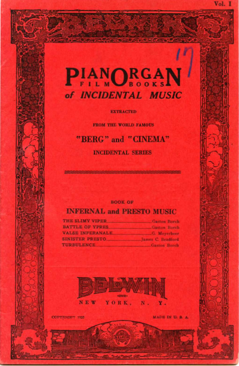

The music in movies is an intrigal part of the storytelling. While we see the visuals on the screen before us, out subconsious is guided by music. The idea of using music in movies to set the tone of a scene began during the silent film era. “Although we commonly call the films made between 1895 and 1927 “silent,” these works were almost universally accompanied by music and/or sound” (Silent Film Sound &). Classical pieces of music were thought to fit over certain scenes with specific elements in them thus creating the tone. If the music was changed, the tone of the scene would also change and this is why you can change the music in a horror movie and make it a comedy (Silent Film Sound &).
 An example of a photoplay album. This volume of “Infernal and Presto Music” from Belwin contains four pieces for use in the cinema.
Studies have also been done to show that the music in films keeps people engrossed in what is happening. In 2015, Nanette Nielsen, a researcher at the Department of Musicology at the University of Nottingham, conducted a study where employees of the university participate as “players” following a narrative. The volunteers followed an interactive drama called “The Memory Dealer'' by Rik Lander where they were not just watching a film but engaging in the story and physically following it. In an interview with Silje Pileberg, Nielson explains, “What kept people captivated was the music: it made them hold on to the right amount of self-reflection and engagement so that they weren't pulled out of the experience” (Pileberg).